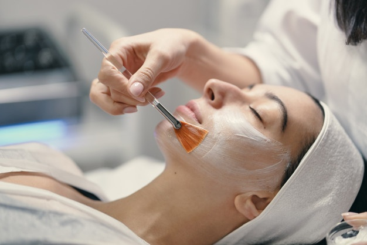

Muito se ouve falar sobre transição de carreira, mas ninguém te explica o tamanho do desafio quando resolve trocar de area. Pois bem, minha batalha começou a pouco mais de dois meses em meio a uma mudança de vida e rotina completamente radical.
Mas calma, não vou dar spoiler. Tenha paciencia pois aqui estou realizando o meu primeiro site, certamente você vai encontrar coisas que precisam ser melhoradas e aperfeiçoadas, e isso vai acontecer no decorrer do meu curso. Mas antes de mais nada vou te contar um pouquinho da minha história de vida e como cheguei até aqui.
Vida de adulto
Seguindo os passos da minha mãe, escolhi minha profissão assim que terminei o Ensino Médio. Meu início na vida Academica foi em um Curso Técnico logo depois da formatura, a cada aula me sentia mais apaixonada pela Estética. Unir saúde, conforto, bem estar, beleza, sempre me pareceu ser um combo perfeito.
Eu tinha acabado de completar 18 anos, tinha uma vida bastante agitada. Trabalhava em horário comercial para uma acessoria de cobranças no centro da cidade, e tinha que correr muito para chegar na escola antes do inicio da aula.
Durante um tempo me mantive forte, e conseguia cumprir com excelência toda a demanda da minha vida adulta. Sempre fui bastante responsável, não acumulava atividades, seguia ordens, entregas dentro do prazo. Mas uma hora nosso corpo reclama, e resolve por conta própria dar uma pausa em tudo.
Desenvolvi tendinite, para quem não sabe é uma inflamação que causa muita dor e inchaço do tendão. No meu caso atingiu o punho e tive de imobilizar meu braço por alguns dias para conter a inflamação.
Seguia a risca as recomendações de repouso, queria me livrar logo daquele gesso. Era mês de Outubro e já estava no último módulo do curso, logo as aulas acabariam.
Os dias foram passando e eu já me sentia melhor da dor no braço, mas comecei sentir dores de cabeça e nas costas com muita frequência. Na verdade a dor era quase incesante, eu não podia imaginar que o pior estava por vir...
Diagnóstico

As dores eram cada vez mais insuportável, eu mal podia me mexer quando fomos ao hospital e os médicos me internaram com o diagnóstico de meningite. A meningite é uma infecção das membranas que recobrem o cérebro e dificulta o transporte de oxigênio para às células do corpo. O tratamento não foi nada fácil, os dias no isolamento eram terríveis e eu não podia ver minha família pois tinha o risco de contágio.
A recuperação é bem complicada, e por vários meses precisei fazer tratamentos para controlar as dores de cabeça mesmo depois de curada da meningite. Foi então que resolvi abrir mão do meu emprego na acessoria e seguir apenas com a carrerira de estetica. Dei início a um casamento com a profissão e me mantive fiel por muito tempo.
Sempre gostei muito de estudar, e a flexibilidade de horário me permitiu cursar 3 faculdades. Estética, Massoterapia e Pedagogia, a terceira foi para uma realização pessoal não cheguei a exercer.
Experiencia Incrível
Tinha acabado de completar 26 anos quando me casei. E dois anos depois embarcamos rumo a Irlanda para realizar um Intercâmbio Estudantil, sem dúvida uma das melhores experiencias de nossas vidas.
Vivemos na Europa por pouco mais de 7 meses, conhecemos diversos paises, estudamos bastante, e ainda tive oportunidade de exercer minha profissão. Mas no inicio da Pandemia meu marido recebeu uma proposta de emprego, o que nos fez voltar a viver no Brasil.
Com todas as restrições impostas para conter o avanço da Pandemia, eu tive de me afastar dos atendimentos estéticos. O que me deixou muito mal, tive algumas crises de ansiedade e até uma crise de panico. Foi quando decide que precisava de um plano B.
Comecei a trabalhar em um Cartório de Registro de Imóveis, e para a minha surpresa me adaptei muito bem com a nova rotina de trabalho e a vida no escritório, estava muito feliz por excercitar a minha mente e adquirir mais conhecimento. Mas mesmo feliz não me sentia completa, ainda tinha muita vontade de voltar a viver na Europa. Foi quando meu marido e eu resolvemos dar entrada no meu processo de reconhecimento de Cidadania.
Em poucos meses embarcamos rumo a uma nova aventura. Desta vez nosso destino foi a Itália, desde o início sabíamos que era um processo demorado e que precisariamos esperar com muita paciência. Incentivada pelo meu marido que trabalha com Banco de Dados, comecei estudar Programação e descobri uma nova paixão.
Enfim chegamos aos dias de hoje.
Fiz um breve resumo para que você possa entender onde estamos agora na minha linha do tempo. A partir daqui não falaremos mais no tempo passado, e sim no presente. O que estou vivendo e aprendendo a cada dia.
Start nos Estudos

Ainda não tenho meu próprio computador mas uso o do meu marido para estudar. Comecei assistindo algumas aulas no YouTube e me identifiquei com o conteúdo, então meu marido me matriculou em um curso de Desenvolvimento Web Full Stack na Digital House
Recentemente me inscrevi na Plataforma Dio, e tem sido muito enriquecedor de conhecimento. A cada dia tenho um novo desafio de estudos.